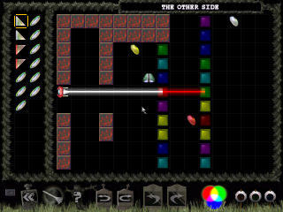

| | |
| | |
| Level | The other side |
| Difficulty | Suspense |
| | |
| Author | Alan Carre |
| Pieces | 13 |
| | |
| | |
| | |
|  |
Text Hints |
| | Cryptic | "An old beginning" |
| Good Hint | "Use a prism first" |
| Good Hint | "Make yellow with a prism" |
| Great Hint | "Split yellow with a mirror prism" |
| Great Hint | "Rebuld white on the other side" |
Picture Hints
Remember that, while picture hints most often show a portion of the solution they occasionally only suggest the solution by showing a pattern used.
Level Notes
This level introduces the "Mirrored" prism piece. The mirrored prism behaves just like a regular prism
except it looks and behaves exactly as it's mirror image. For instance a white beam going up into the back of a prism
would send the blue beam to the right. For the mirrored prism it would instead go left.
A bit of trivia about this level:
This level actually first appeared in the classic level set but with only regular prisms (Level: "Filter walls"). We
found that by using mirrored prisms the same level could be completed with 2 fewer mirrors!
|
Cryptics: Warning: This section may contain spoilers
Clue: "An old beginning"
This clue refers to the fact that the first few moves in this level are the same as the first few moves in the classic level "Filter walls". It
tells us that, assuming we remember:
"Split the beam with a prism and combine to make yellow just above the One Way piece".
Which is
the way to begin solving "Filter walls".
|
Back To Index
|